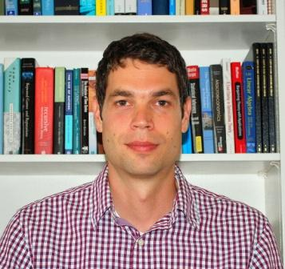

Marko Klašnja ("Klashnya")
Provost's Distinguished Associate Professor
School of Foreign Service and Government Department
Georgetown University
marko.klasnja@georgetown.edu
I am the Provost’s Distinguished Associate Professor at Georgetown University, with a joint appointment in the Edmund A. Walsh School of Foreign Service and the Department of Government. My research examines democratic accountability and inequalities in political representation: how citizens hold elected officials accountable, and whose interests those officials represent.
One strand of my work studies corruption and electoral accountability. I examine why voters sometimes reelect corrupt politicians, when they punish misconduct, and how political parties strengthen or weaken accountability. I also study political charisma, developing new ways to measure it and examining how citizens form attachments to charismatic leaders and how those attachments shape democratic accountability. A second strand explores the relationship between wealth and political representation, including why wealthy individuals are overrepresented in elected office, how politicians’ wealth shapes their political careers and behavior, and how the political attitudes and preferences of wealthy citizens differ from those of the broader public. These interests come together in my book manuscript with Lucia Motolinia, Public Servants, Private Fortunes: Why Wealth Shapes Who Governs and How, which is under contract with Princeton University Press.
My research has appeared in the American Political Science Review, American Journal of Political Science, and Journal of Politics, as well as the Quarterly Journal of Economics and Journal of Public Economics, among other journals. In 2024, I received the Theda Skocpol Emerging Scholar Award from the American Political Science Association’s Comparative Politics Section.
I received my Ph.D. in political science from New York University in 2015 and held a postdoctoral fellowship at Princeton University’s Center for the Study of Democratic Politics in 2014–2015. At Georgetown, I teach undergraduate and graduate courses in comparative politics, political economy, and formal and quantitative research methods.